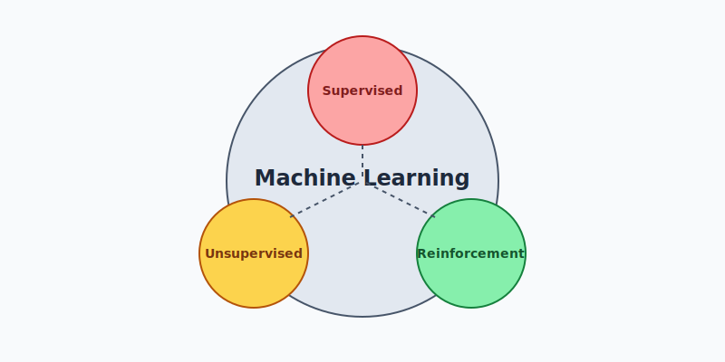

Algorithms that improve automatically through experience and data.
Machine Learning (ML) is a subset of AI that focuses on building systems that learn from data. Instead of being explicitly programmed, ML models find patterns in data to make predictions or decisions.
The model learns from labeled training data. It maps inputs to known outputs. Examples include classification (spam detection) and regression (house price prediction).
The model learns from unlabeled data. It finds hidden structures or patterns. Common techniques include clustering (customer segmentation) and dimensionality reduction (PCA).
An agent learns to make decisions by performing actions in an environment and receiving rewards or penalties. It's widely used in robotics and game playing (e.g., AlphaGo).
Inspired by the human brain, neural networks consist of layers of interconnected nodes (neurons). They are the foundation of Deep Learning and are capable of modeling complex non-linear relationships.
It's crucial to assess how well a model performs. Metrics like accuracy, precision, recall, F1-score, and confusion matrices are used to evaluate models on test data.